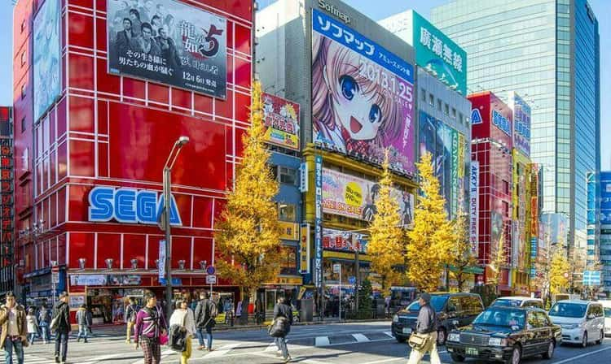

Japan is a beautiful contry renowned for its culture for a good reason. The culnary, entertainment, and all the way down to its history is truly a sight to behold.
Things to do in Japan

Akihabara is one of the biggest tourest spots in Japan because of it's appeal towards Otaku's. The term "Otaku" simply means an obseession/love in the fields of Anime, Manga, and Video games. However, it does go by a diffrent name, that name being Anime city.